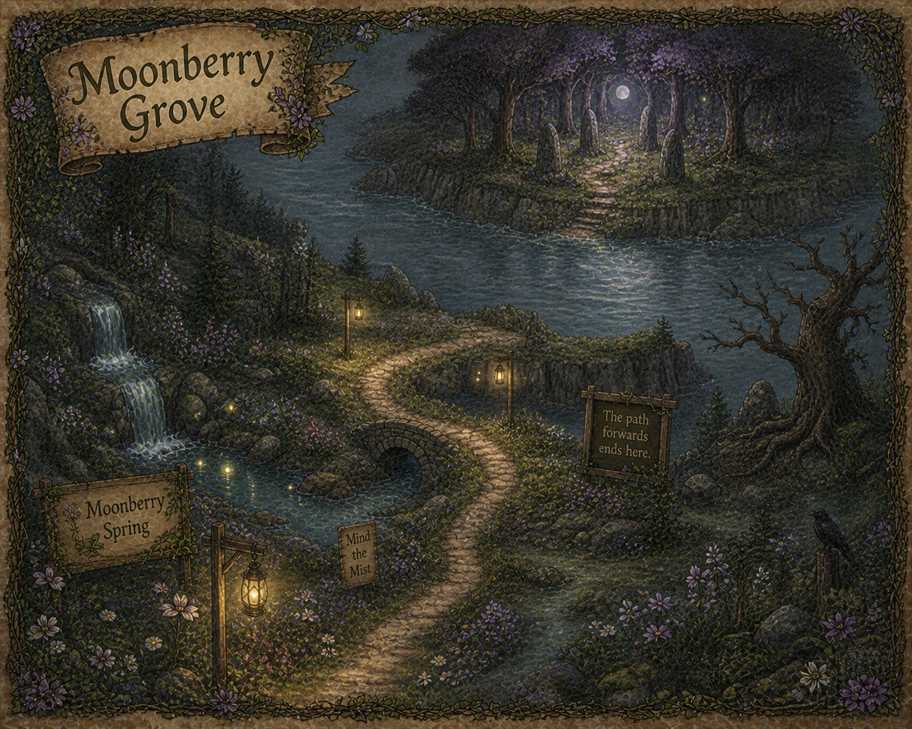
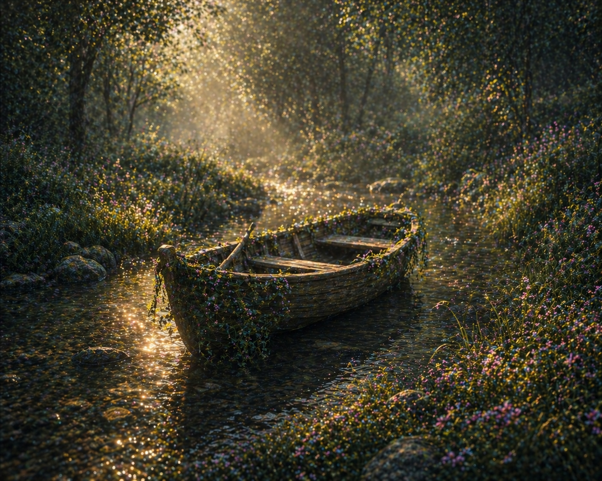
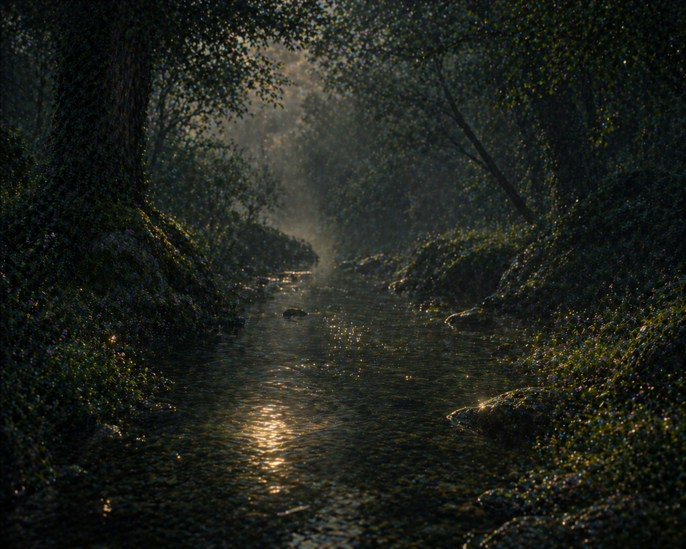

You chose the map that leads you through the Moonberry Grove spring. When you and your friends finally reach the spring, you notice the course continues through the spring. How do you choose to continue your journey?

